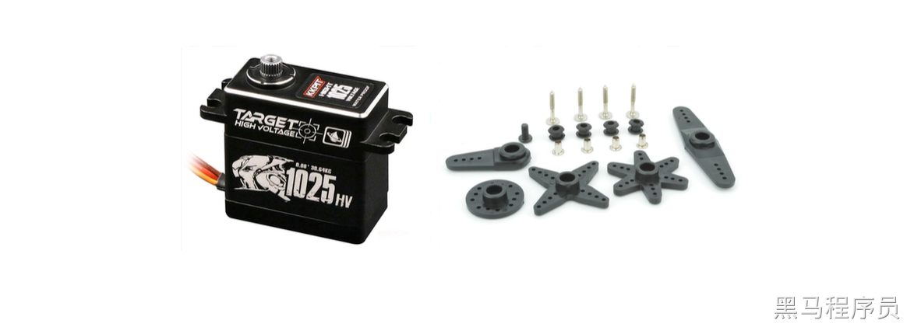
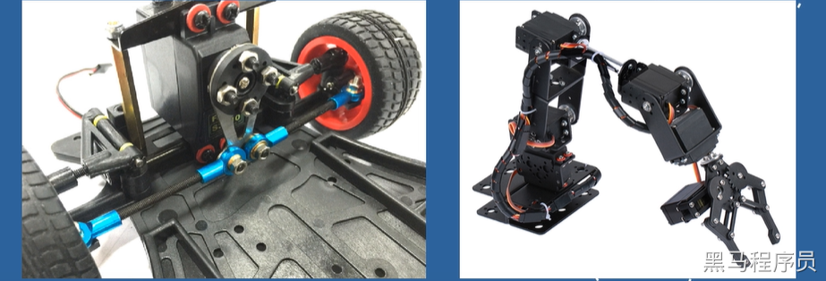
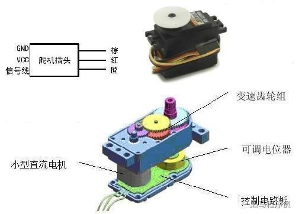
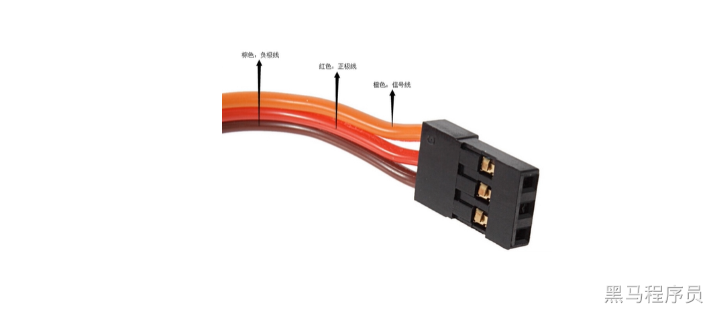
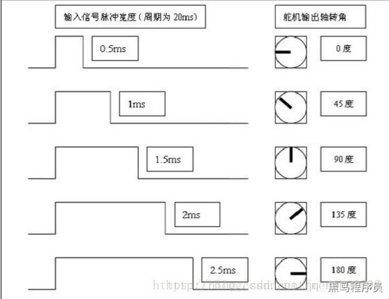
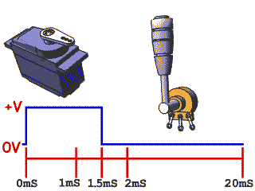
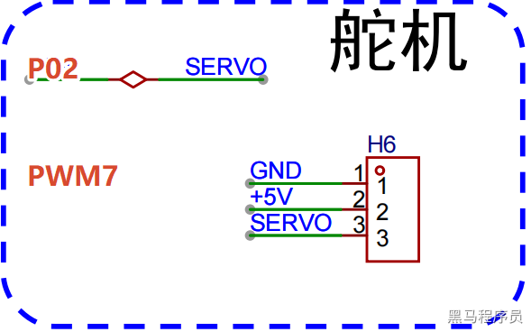

<!DOCTYPE lake>
<h2 data-lake-id="VAvTS" id="VAvTS"><span data-lake-id="u11b0f7cd" id="u11b0f7cd" style="color: rgba(0, 0, 0, 0.87)">舵机简介</span></h2><p data-lake-id="uc82224ad" id="uc82224ad"><br/></p><p data-lake-id="u62aa8f31" id="u62aa8f31"></p><p data-lake-id="ube70fd2a" id="ube70fd2a"><span data-lake-id="u4d99583f" id="u4d99583f" style="color: rgba(0, 0, 0, 0.87)">舵机最早用于船舶上实现转向功能,由于可以通过程序连续控制其转角,因而被广泛应用于智能小车转向以及机器人各类关节中. </span></p><p data-lake-id="ubd00683b" id="ubd00683b"><span data-lake-id="uae290559" id="uae290559" style="color: rgba(0, 0, 0, 0.87)">工作电压：</span><code data-lake-id="u06a0c200" id="u06a0c200"><span data-lake-id="ub1e981d7" id="ub1e981d7" style="color: rgba(0, 0, 0, 0.87)">3V-7.2V</span></code><span data-lake-id="u99cbb4ba" id="u99cbb4ba" style="color: rgba(0, 0, 0, 0.87)">（取决于具体型号）</span></p><p data-lake-id="u48ba525a" id="u48ba525a"><span data-lake-id="ud4ace42a" id="ud4ace42a" style="color: rgba(0, 0, 0, 0.87)">工作电流：</span><code data-lake-id="uf86e6482" id="uf86e6482"><span data-lake-id="ud80f1c21" id="ud80f1c21" style="color: rgba(0, 0, 0, 0.87)">100mA</span></code><span data-lake-id="u9c388772" id="u9c388772" style="color: rgba(0, 0, 0, 0.87)">（取决于具体型号）</span></p><p data-lake-id="uf66c78f1" id="uf66c78f1"></p><p data-lake-id="ua48cfdb7" id="ua48cfdb7"><span data-lake-id="ue8793cca" id="ue8793cca" style="color: rgba(0, 0, 0, 0.87)">舵机由直流电机、减速齿轮组、传感器和控制电路组成的一套自动控制系统.通过发送信号,指定输出轴旋转角度.舵机一般而言都有最大旋转角度(比如180度)</span></p><p data-lake-id="u84f75c44" id="u84f75c44"><span data-lake-id="u0dca6503" id="u0dca6503" style="color: rgba(0, 0, 0, 0.87)">与普通直流电机的区别：</span></p><ul list="ua01ea2fd"><li data-lake-id="uc2cbec34" fid="u726c5514" id="uc2cbec34"><span data-lake-id="u96f6d46b" id="u96f6d46b" style="color: rgba(0, 0, 0, 0.87)">直流电机是一圈圈转动的</span></li><li data-lake-id="uee5e905d" fid="u726c5514" id="uee5e905d"><span data-lake-id="u5658b15a" id="u5658b15a" style="color: rgba(0, 0, 0, 0.87)">舵机智能在一定角度内转动,不能一圈圈转动</span></li><li data-lake-id="u965290cf" fid="u726c5514" id="u965290cf"><span data-lake-id="u788aa5ec" id="u788aa5ec" style="color: rgba(0, 0, 0, 0.87)">普通的直流电机无法反馈转动的角度信息，而舵机可以</span></li></ul><p data-lake-id="ue90cca39" id="ue90cca39"><span data-lake-id="u55031752" id="u55031752" style="color: rgba(0, 0, 0, 0.87)">用途也不相同：</span></p><ul list="u241fd7b9"><li data-lake-id="u8f46778b" fid="u4f09531c" id="u8f46778b"><span data-lake-id="u50c0050e" id="u50c0050e" style="color: rgba(0, 0, 0, 0.87)">普通直流电机一般是整圈转动做动力用</span></li><li data-lake-id="u4b613db9" fid="u4f09531c" id="u4b613db9"><span data-lake-id="u2e8505e7" id="u2e8505e7" style="color: rgba(0, 0, 0, 0.87)">舵机是控制某物体转动一定角度用(比如机器人的关节)</span></li></ul><p data-lake-id="u368695f6" id="u368695f6"></p><h2 data-lake-id="czMOG" id="czMOG"><span data-lake-id="u08f0aca4" id="u08f0aca4" style="color: rgba(0, 0, 0, 0.87)">舵机信号线</span></h2><p data-lake-id="ud889a065" id="ud889a065"></p><p data-lake-id="u68629086" id="u68629086"><span data-lake-id="ua5c34850" id="ua5c34850" style="color: rgba(0, 0, 0, 0.54)">棕色接地 中间红线5v 橙色信号线</span></p><p data-lake-id="u30f17045" id="u30f17045"><br/></p><p data-lake-id="ub1ddbf6c" id="ub1ddbf6c"><span data-lake-id="u38524a7a" id="u38524a7a" style="color: rgba(0, 0, 0, 0.87)">舵机的主要组成部分为伺服电机，所谓伺服就是服从信号的要求而动作。在信号来之前，转子停止不动；信号来到之后，转子立即运动。因此我们就可以给舵机输入不同的信号,来控制其旋转到不同的角度。 舵机接收的是PWM信号，当信号进入内部电路产生一个偏置电压，触发电机通过减速齿轮带动电位器移动，使电压差为零时，电机停转，从而达到伺服的效果。简单来说就是给舵机一个特定的PWM信号，舵机就可以旋转到指定的位置。 舵机上有三根线，分别是GND(棕线)、VCC(红线)和SIG(橙线)，也就是地线、电源线和信号线，其中的PWM波就是从信号线输入给舵机的。</span></p><p data-lake-id="u696094b2" id="u696094b2"><span data-lake-id="uc55a0cb6" id="uc55a0cb6" style="color: rgba(0, 0, 0, 0.87)">一般来说，舵机接收的PWM信号频率为</span><code data-lake-id="ud1560a1e" id="ud1560a1e"><span data-lake-id="u0bd1027c" id="u0bd1027c" style="color: rgba(0, 0, 0, 0.87)">50HZ</span></code><span data-lake-id="ue4bfd97c" id="ue4bfd97c" style="color: rgba(0, 0, 0, 0.87)">，即周期为</span><code data-lake-id="u6a5f99a7" id="u6a5f99a7"><span data-lake-id="u07773957" id="u07773957" style="color: rgba(0, 0, 0, 0.87)">20ms</span></code><span data-lake-id="u8ccb68db" id="u8ccb68db" style="color: rgba(0, 0, 0, 0.87)">。当高电平的脉宽在</span><code data-lake-id="ud961d7bf" id="ud961d7bf"><span data-lake-id="u8d335cd1" id="u8d335cd1" style="color: rgba(0, 0, 0, 0.87)">0.5ms-2.5ms</span></code><span data-lake-id="u1a816d3b" id="u1a816d3b" style="color: rgba(0, 0, 0, 0.87)">之间时舵机就可以对应旋转到不同的角度。如下图。</span></p><p data-lake-id="u03856a12" id="u03856a12"></p><p data-lake-id="uae571f0a" id="uae571f0a"></p><h2 data-lake-id="HX6IM" id="HX6IM"><span data-lake-id="uc600f677" id="uc600f677">代码示例</span></h2><p data-lake-id="ub1c9a409" id="ub1c9a409"><span data-lake-id="u7ccc8460" id="u7ccc8460">扩展板用 P02 (PWM7)</span></p><p data-lake-id="u2da2309b" id="u2da2309b"></p><p data-lake-id="u84dbc8c1" id="u84dbc8c1"><br/></p><p data-lake-id="u27bbc991" id="u27bbc991"><span data-lake-id="u7deada84" id="u7deada84">以P21（PWM6为例）</span></p><h3 data-lake-id="LJWII" id="LJWII"><span data-lake-id="u6248aa50" id="u6248aa50">PWM初始化</span></h3><span class="yuque-card-unsupported">[codeblock]</span><h3 data-lake-id="Otf6S" id="Otf6S"><span data-lake-id="u7d02303d" id="u7d02303d">添加舵机角度控制函数</span></h3><span class="yuque-card-unsupported">[codeblock]</span><h3 data-lake-id="wMAOd" id="wMAOd"><span data-lake-id="ub643a4e0" id="ub643a4e0">在按钮事件里修改舵机角度</span></h3><span class="yuque-card-unsupported">[codeblock]</span><h3 data-lake-id="Y1Izu" id="Y1Izu"><span data-lake-id="ue7076c49" id="ue7076c49">完整代码</span></h3><p data-lake-id="u9724b849" id="u9724b849"><a class="yuque-card-link" href="../../_assets/9b70fdb90c3bc0de9de20a0a.zip">舵机PWM_示例.zip</a></p>